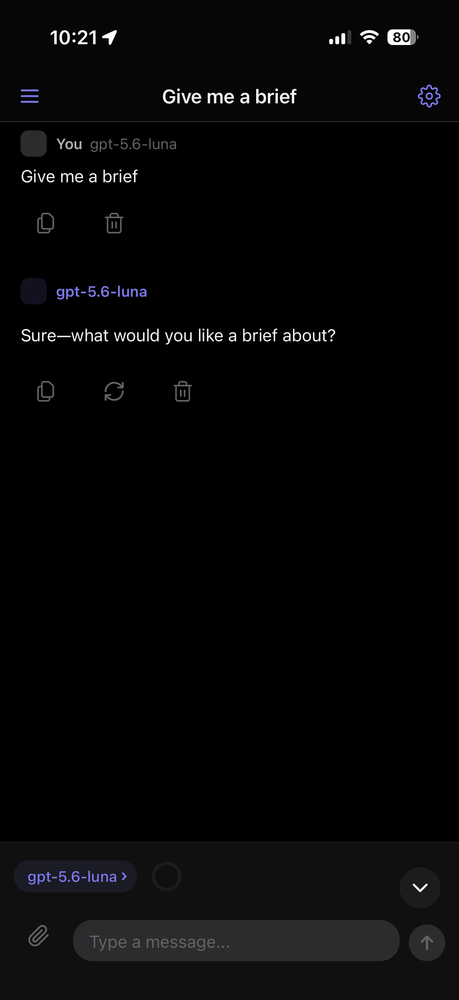

Arlo Lite is a lightweight iOS client for chatting with LLMs. Bring your own API key and talk directly to the provider — no backend, no subscription, no telemetry.

No fluff. Just a fast, capable interface for working with LLMs every day.
Your API keys stay on your device in the iOS Keychain. No middleman, no backend server, no account required.
Responses stream in token-by-token via SSE. Stop generation anytime. Provider-specific parsers for maximum fidelity.
All chats persisted locally. Switch models mid-session. Rename, delete, or pick up where you left off.
Code blocks with syntax highlighting, tables, lists, and one-tap copy. Designed for technical conversations.
Per-turn and per-session cost computed from token usage and model pricing. Know exactly what you're spending.
Adjust reasoning effort per session. Unified abstraction across providers — from minimal to extended thinking.
Connect to the models you use. Switch between them seamlessly.
Chat Completions & Responses API. Connect to the latest OpenAI models.
Messages API. Claude Opus, Sonnet, and Haiku models.
Ollama, llama.cpp, vLLM, and any OpenAI-compatible local endpoint.
Arlo Lite is free to use, modify, and distribute. The entire codebase is on GitHub. Built with React Native and Expo for a native iOS experience.